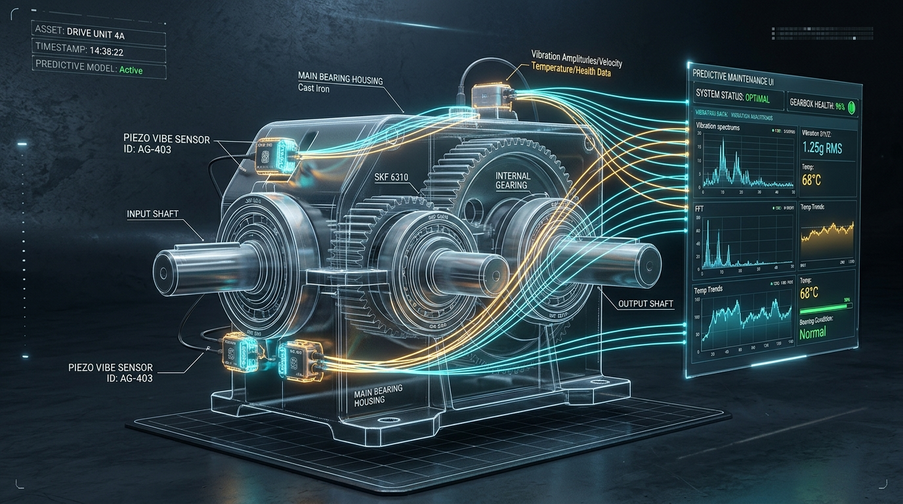

📡 ASSET: DRIVE-UNIT-04A [SPECTRAQUEST GDS]
⚡ LOAD: 50% | 1800 RPM (30 Hz)

Gearbox meshing operating within ISO 10816-3 Grade A/B vibration limits. Schedule routine quarterly oil analysis and inspect magnetic drain plug at next scheduled maintenance window.
Upload vibration CSV/TXT recording files, extract 22 statistical time & frequency features, and run full AI classification.
| Feature Name | Extracted Value | Standard Range | Diagnostic Significance |
|---|---|---|---|
| RMS Amplitude | 1.0421 g | 0.5 — 2.5 g | Overall vibration energy & severity |
| Peak-to-Peak (P2P) | 3.1804 g | 1.5 — 8.0 g | Maximum shock displacement excursion |
| Kurtosis | 0.0812 | -0.5 — 1.0 (Healthy) | Sensitive to tooth spalling & impact transients |
| Crest Factor | 2.1520 | 1.8 — 3.5 | Ratio of peak to RMS; flags impulsive wear |
| Signal Mean | 0.0124 g | ~0.0 g | DC bias offset detection |
| Standard Deviation | 1.0420 g | 0.5 — 2.5 g | AC vibration dispersion |
| Dominant Frequency | 30.0 Hz | 30 Hz (1X Shaft) | Shaft rotational synchronization |
| Spectral Centroid | 312.4 Hz | 200 — 1200 Hz | Center of mass of frequency power spectrum |
| Spectral Rolloff (95%) | 1420.0 Hz | 1200 — 1800 Hz | High frequency energy concentration |
| Shape Factor | 1.248 | 1.1 — 1.5 | Waveform contour deformation index |
| Impulse Factor | 2.684 | 2.0 — 4.0 | Impact severity to average amplitude ratio |
| Margin Factor | 3.120 | 2.5 — 5.0 | Clearance wear indicator |
Comparative benchmarking of 4 machine learning and deep learning models evaluated on held-out test groups with zero data leakage.
150 decision trees trained on 22 statistical time/frequency features.
Gradient boosted decision trees with early stopping on validation split.
Multi-layer 1D CNN with receptive field k=15 directly on 2048 raw waveforms.
Real-time audit log of triggered alerts, consecutive-window state transitions, and operator acknowledgement tracking.
| ALERT ID | MACHINE ID | TIMESTAMP | SEVERITY | INCIDENT DESCRIPTION | STATE | TRIAGE ACTION |
|---|
Complete structural hierarchy, interactive routing directory, data flow pipelines, and REST API specification for the Gearbox Condition Monitoring system.
Real-time industrial telemetry cockpit monitoring machinery condition under active mechanical loads.
Signal analysis workbench for file playback, 22 feature extraction, and offline validation.
Evaluation metrics, accuracy benchmarks, inference latencies, and checkpoint provenance.
Alert stream with deduplication, acknowledgement tracking, and SQLite observation storage.
High-performance async Python backend exposing Swagger UI documentation and REST endpoints.
Multi-page Streamlit portal with Plotly interactive charts and hardware serial acquisition.
Physical acquisition through signal validation, feature engineering, dual AI models, and operational triage.